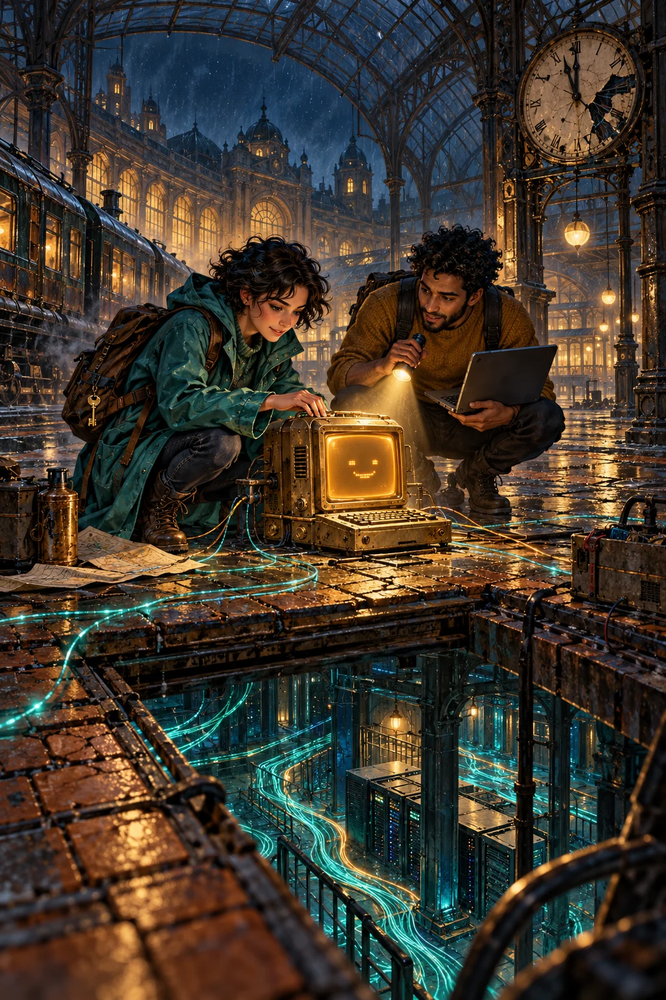

Neu erzählt · Netzwerke, Automation & KI
Der letzte Ping
Das Geheimnis des Signalhauses
Eine Nachricht von ihrem verschwundenen Bruder. Ein Computer, der ihren Namen kennt. Und nur 43 Minuten, bevor jemand alle Spuren löscht. Mira muss den richtigen Weg finden – durch ein Netzwerk und zurück zu den Menschen, die ihr wichtig sind.
14 BuchseitenB1/B2Lerninfografiken20 WörterHörfassung · 16 Min.
Ins Signalhaus eintreten →